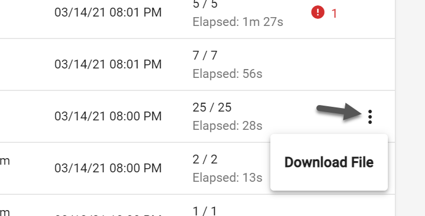
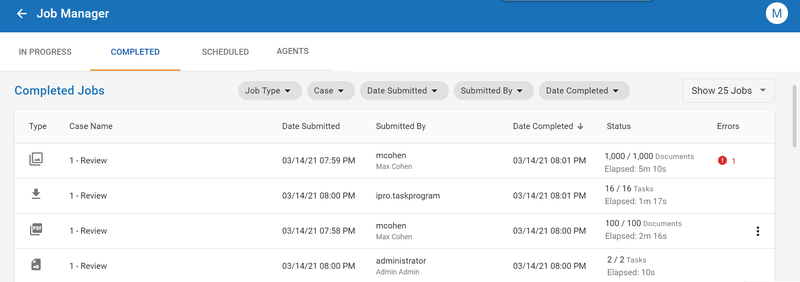
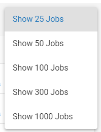

Note: For Print to PDF jobs, you can download the PDF files directly to your machine by selecting the three vertical dots on the right side of the grid.

After jobs have finished processing in
With the Job Manager open, click the Completed tab in the top-left corner of the page. All completed jobs appear in a grid.

The Completed Jobs table displays information about each job, including:
|
|
Note: For Print to PDF jobs, you can download the PDF files directly to your machine by selecting the three vertical dots on the right side of the grid.
 |
You can sort the list of completed jobs alphanumerically by selecting the column head in the grid whose contents you would like to sort. You can sort the jobs alphanumerically based on Job Type, Case, Date Submitted, Submitted By, or Date Completed. Clicking the Submitted By column, for instance, will show all completed jobs in alphabetical order based on the names of the users who submitted the jobs.
If you click the column head once more, all jobs display in reverse-alphabetical order.
The Job Manager provides filtering capabilities to help you locate the specific jobs you need. Review the information below to learn more about working with filters.
When you apply a filter, the chip associated with the filter turns blue to indicate that it has been applied. Additionally, a number displays on the chip that represents the number of parameters configured within that filter. In the example below, two job types have been selected and applied. As such, the Job Type filter card has turned blue, and displays +2 beside the name.
You can apply more than one filter at a time. For instance, you can use the Job Type filter to search exclusively for Print to PDF jobs, while using the Case filter to locate these jobs within a specific case. The combination of filters provides you with a more fine-grained search experience.
For most filter options, a Select All button is available for you to select every parameter in that filter with a single click. Once all items are selected, you can then deselect any unneeded items. For instance, if you would like to include most job types in your filter, you can save time by clicking the checkbox for Select All, then unchecking any of the job types you would like to exclude.
You can set how many jobs you would like displayed in the grid by using the Show Jobs dropdown. Options include showing 25, 50, 100, 300, and 1000 jobs.

The table below describes the filtering options available on the Completed tab of the Job Manager.
|
Option |
Description |
|---|---|
|
Job Type |
Use this filter to specify which job types to include in the Completed Jobs grid. Select the checkbox beside a job type to include all jobs of that type in the grid. For instance, if you select the checkboxes beside Import and Keyword List, only Import and Keyword List jobs will appear in the grid. Click the Apply button to apply the filter options you selected. |
|
Case |
You can use this filter to specify which cases to include in the Completed Jobs grid. Select the checkbox beside a case to include jobs associated with that case in the grid. For instance, if there are twenty cases available, and you select the checkbox beside Case 1, only jobs associated with Case 1 will display in the grid. Click the Apply button to apply the filter options you selected. |
|
Date Submitted |
This filter displays jobs submitted on a specific date or within a specified date range. Choose from the options below:
|
|
Submitted By |
You can use this filter to display jobs submitted by specific users. Select the checkbox beside a user to include jobs submitted by that user in the grid. Any jobs submitted by other users are excluded. Click the Apply button to apply the filter options you selected. |
|
Date Completed |
This filter displays jobs completed on a specific date or within a specific date range. Choose from the options below:
|
You can learn more about a job by clicking on it. The Job Details page opens, displaying information about the selected job.

The Job Details page provides overview information about the job, as well as submission details, a list of tasks completed, and any errors that may have been encountered. Review the items below to learn more about the information included on the Job Details page:
|
|
Note: You can click the Refresh Job button, located in the top-right corner, to update the details page so that it displays the latest information about the job.
|
Job Overview
The Job Overview section provides high-level details about certain key components of the job, including job status, progress, and the number of completed pages (if running a PDF or OCR job).
|
Detail |
Definition |
|---|---|
|
Job Status |
Indicates whether the job is active, pending, or completed. |
|
Progress |
Shows the number of documents processed out of the full set. |
|
Completed Pages |
Indicates the number of pages that have been PDFed or OCRed. |
Submission Details
In the Submission Details section, you can view information about who submitted the job, the date it was submitted for processing, the date when it finished processing, and the amount of time taken for the job to complete.
|
Detail |
Definition |
|---|---|
|
Date Submitted |
The date the job was created. |
|
Date Completed |
The date the job finished processing. |
|
Submitted By |
The name of the user who created the job. |
|
Time Elapsed |
The amount of time taken for the job to process. |
Tasks
The Tasks section details the various steps taken to complete the job. For each task associated with a particular job, this tab reports the task description, status, progress, Agent. the number of retries, and the time elapsed.
A ‘Overall Progress’ report is located at the bottom left of the window, providing an up-to-date view of the number of tasks in each status.
Tasks can be quickly filtered based on their status from the top right of the window.
If a task fails for any reason, an indication of this failure appears in the Status column. The Retry All Failed Tasks button becomes enabled. Click this button to rerun all failed tasks. The Retries column records the number of times tasks have been retried.
Errors
The Errors section displays any errors associated with the job. The Errors grid details the Task ID associated with the error, the error type, and the error message. Hover your mouse over the error message to view a tooltip that displays more information about the error.
|
|
Tip: To view all information about the error, download the job's log file. |
If no errors are registered during the processing of the job, this tab remains empty.
To download a log file associated with the job, click the Download Log button in the top-right corner of the details page.
|
|
Note: To download the log file, ensure that you have a text editor installed on your machine that can open .json files. |
Related Topics